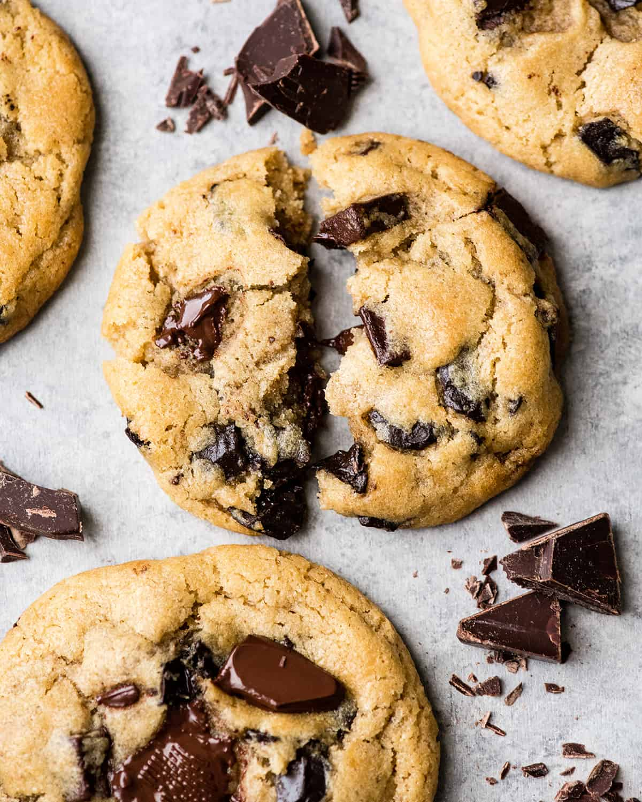
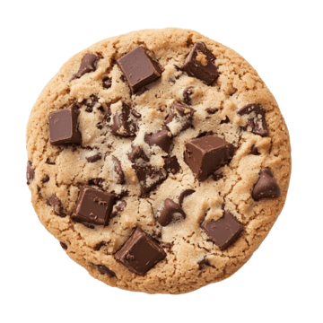

Chocolate Chip Cookies
Makes 36 cookies
Introduction
I chose these chocolate chip cookies not only because they are very easy, but also because the recipe is basically foolproof. These are the cookies my mom always makes for me and my friends. She always freeses the cookie dough so that fresh cookies are always only 10 minutes away. The original recipe comes from this website, although some changes have been made (I hope I got them all). Enjoy!

Ingredients
- 1 cup softened salted butter
- 1 cup granulated sugar
- 1 cup packed light brown sugar
- 2 teaspoons pure vanilla extract
- 2 large eggs
- 3 cups all-purpose flour
- 1 teaspoon baking soda
- ½ teaspoon baking powder
- 1 teaspoon sea salt
- 2 cups chocolate chips
Instructions

- Preheat oven to 375°C and line three baking sheets with parchment paper and set aside.
- In a medium bowl mix flour, baking soda, baking powder, and salt. Set aside.
- Cream together butter and sugars (granulated and brown) until combined.
- Beat in eggs and vanilla until light (about 1 minute).
- Mix in the dry ingredients until combined.
- Add chocolate chips and mix well.
- Roll 2-3 tablespoons (depending on how large you like your cookies) of dough at a time and place them evenly spaced on your cookie sheets.
Note: at this point, if you would like frozen cookie dough to bake at a later time, put the cookie dough balls in a container and first refridgerate overnight, then freeze for best results. When you want to bake them, continue with the steps.
- Bake in preheated oven for approximately 8-10 minutes. Take them out when they are just barely starting to turn brown.
- let them sit on the baking pan for 5 minutes before removing to cooling rack.